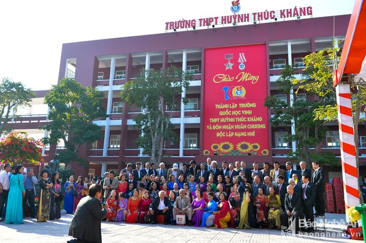

THPT HUỲNH THÚC KHÁNG
Học-Học nữa-Học mãi
Học-Học nữa-Học mãi
Niềm vui ngày trở lại của cựu học sinh Trường THPT Huỳnh Thúc Kháng (TP. Vinh, Nghệ An) tăng lên gấp bội trong dịp kỷ niệm 100 năm thành lập trường. Những ánh mắt lấp lánh, những nụ cười hân hoan của mỗi cô, cậu học trò, những nụ cười hạnh phúc, tự hào của thầy, cô giáo gặp lại trò cũ càng trở nên đẹp đẽ, lung linh...
Dịp này, những cựu học sinh khắp nơi trong tỉnh, trong nước đã trở về Trường THPT Huỳnh Thúc Kháng chào mừng 100 năm ngày thành lập trường.Những người học trò 15, 16 tuổi năm xưa, giờ đây đã trở thành ông, thành bà, tóc đã nhuốm màu thời gian.Được trở về trường, những người học sinh năm ấy nay đã trở thành giáo viên, kỹ sư, bác sỹ; vui mừng khi được gặp lại thầy, cô giáo cũ của mình, ôn lại chuyện trường xưa, lớp cũ.Dù cho bộn bề lo toan cuộc sống, công việc, nhưng ngày trở về trường là dấu ấn cho tất cả các cựu học sinh có được những giây phút lắng đọng, trở về tuổi học trò dưới mái trường với bàn học, sách vở, với phấn trắng.Ngày trở về, cho dù dấu tích của trường xưa, lớp cũ đã bị xóa nhòa, thay vào đó là diện mạo mới, vị thế mới; nhiều thầy, cô giáo cũ đã nghỉ hưu, bạn bè đồng niên mỗi đứa một phương... Thế nhưng, những kỷ niệm xưa vẫn cứ đong đầy, thôi thúc những "người cũ" tìm về với một thời hoa nắng hồn nhiên
trường học là nơi học sinh có thể viết tiếp cuộc đời

Điện thoại :0373215674
Email: phuong2506@gmail.com